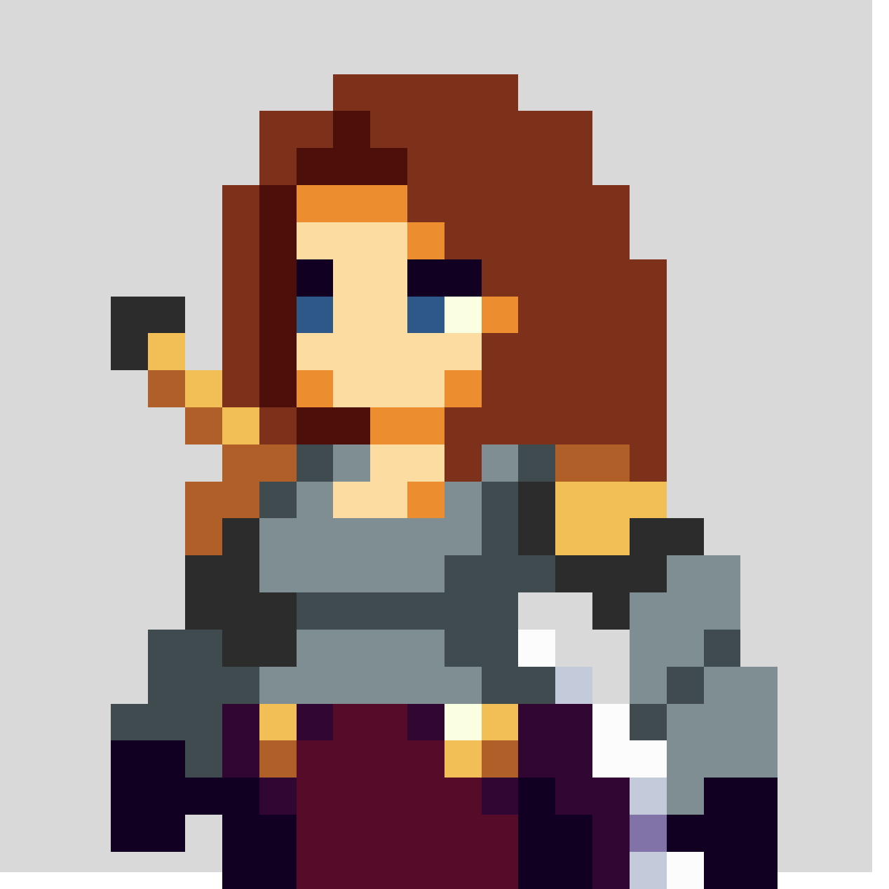

üéÆ Dialoogsysteem Test
üìù Basis Functionaliteit
üë• Character Portretten

Hero
Warrior

Herp

NPC
üéØ Geavanceerde Features
üì± Mobile Test
Test de responsive functionaliteit op verschillende schermformaten.
Klaar voor testing...